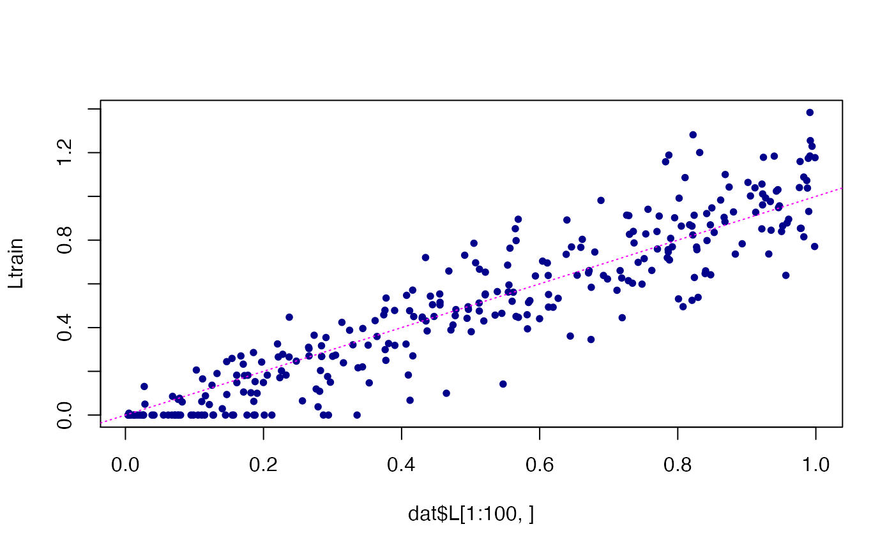
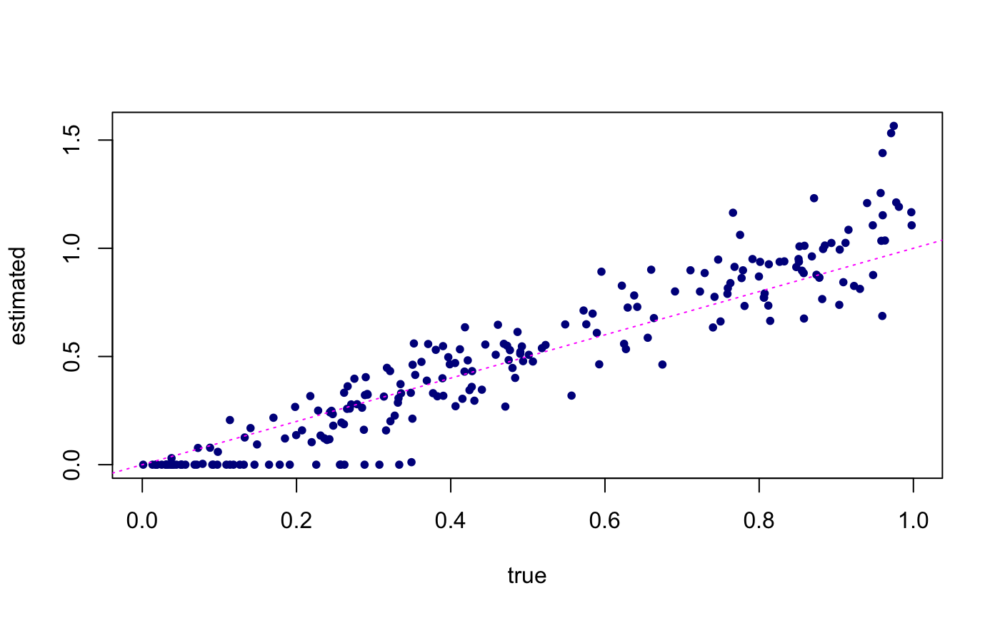
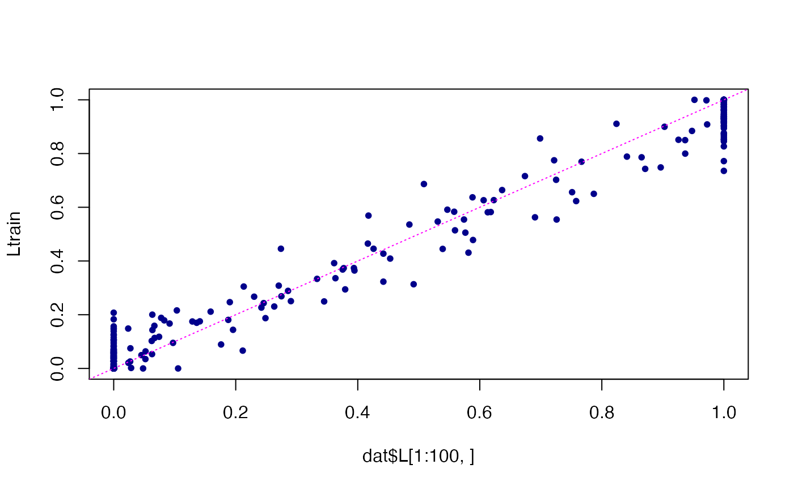
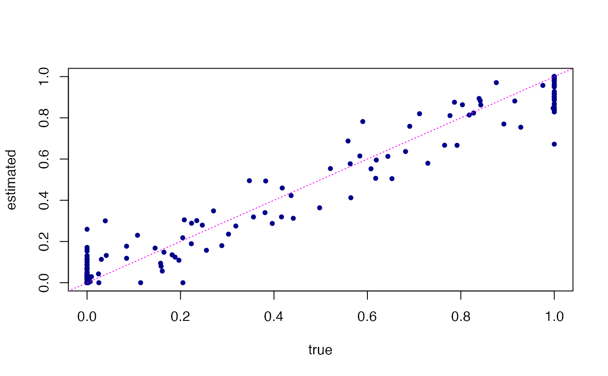

Predict loadings based on previously fit Poisson NMF,
or predict topic proportions based on previously fit multinomial
topic model. This can be thought of as projecting data points onto
a previously estimated set of factors fit$F.
# S3 method for poisson_nmf_fit predict(object, newdata, numiter = 20, ...) # S3 method for multinom_topic_model_fit predict(object, newdata, numiter = 20, ...)
| object | An object of class “poisson_nmf_fit” or “multinom_topic_model_fit”. |
|---|---|
| newdata | An optional counts matrix. If omitted, the loadings estimated in the original data are returned. |
| numiter | The number of updates to perform. |
| ... | Additional arguments passed to
|
# Simulate a 175 x 1,200 counts matrix. set.seed(1) dat <- simulate_count_data(175,1200,k = 3) # Split the data into training and test sets. train <- dat$X[1:100,] test <- dat$X[101:175,] # Fit a Poisson non-negative matrix factorization using the # training data. fit <- init_poisson_nmf(train,F = dat$F,init.method = "random") fit <- fit_poisson_nmf(train,fit0 = fit)#>#> Fitting rank-3 Poisson NMF to 100 x 1200 dense matrix. #> Running 100 SCD updates, without extrapolation (fastTopics 0.5-52).# Compare the estimated loadings in the training data against the # loadings used to simulate these data. Ltrain <- predict(fit) plot(dat$L[1:100,],Ltrain,pch = 20,col = "darkblue")# Next, predict loadings in unseen (test) data points, and compare # these predictions against the loadings that were used to simulate # the test data. Ltest <- predict(fit,test)#>#> Fitting rank-3 Poisson NMF to 75 x 1200 dense matrix. #> Running 20 SCD updates, without extrapolation (fastTopics 0.5-52).# Simulate a 175 x 1,200 counts matrix. set.seed(1) dat <- simulate_multinom_gene_data(175,1200,k = 3) # Split the data into training and test sets. train <- dat$X[1:100,] test <- dat$X[101:175,] # Fit a topic model using the training data. fit <- init_poisson_nmf(train,F = dat$F,init.method = "random") fit <- fit_poisson_nmf(train,fit0 = fit)#>#> Fitting rank-3 Poisson NMF to 100 x 1200 dense matrix. #> Running 100 SCD updates, without extrapolation (fastTopics 0.5-52).fit <- poisson2multinom(fit) # Compare the estimated topic proportions in the training data against # the topic proportions used to simulate these data. Ltrain <- predict(fit) plot(dat$L[1:100,],Ltrain,pch = 20,col = "darkblue")# Next, predict loadings in unseen (test) data points, and compare # these predictions against the loadings that were used to simulate # the test data. Ltest <- predict(fit,test)#>#> Fitting rank-3 Poisson NMF to 75 x 1200 dense matrix. #> Running 20 SCD updates, without extrapolation (fastTopics 0.5-52).